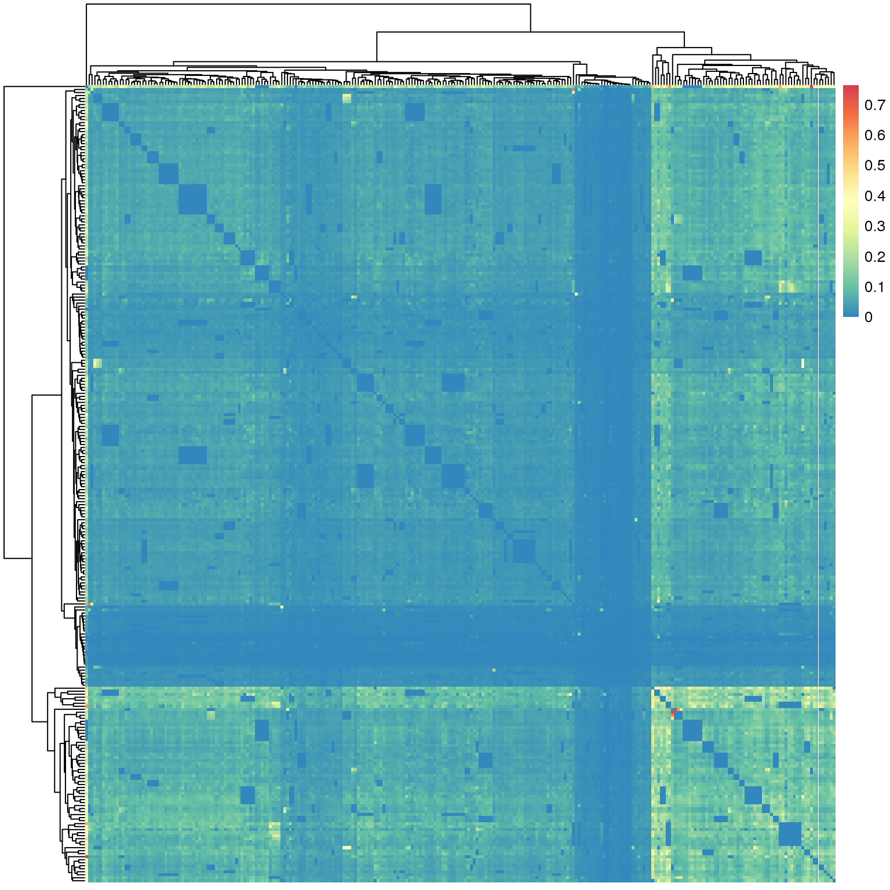
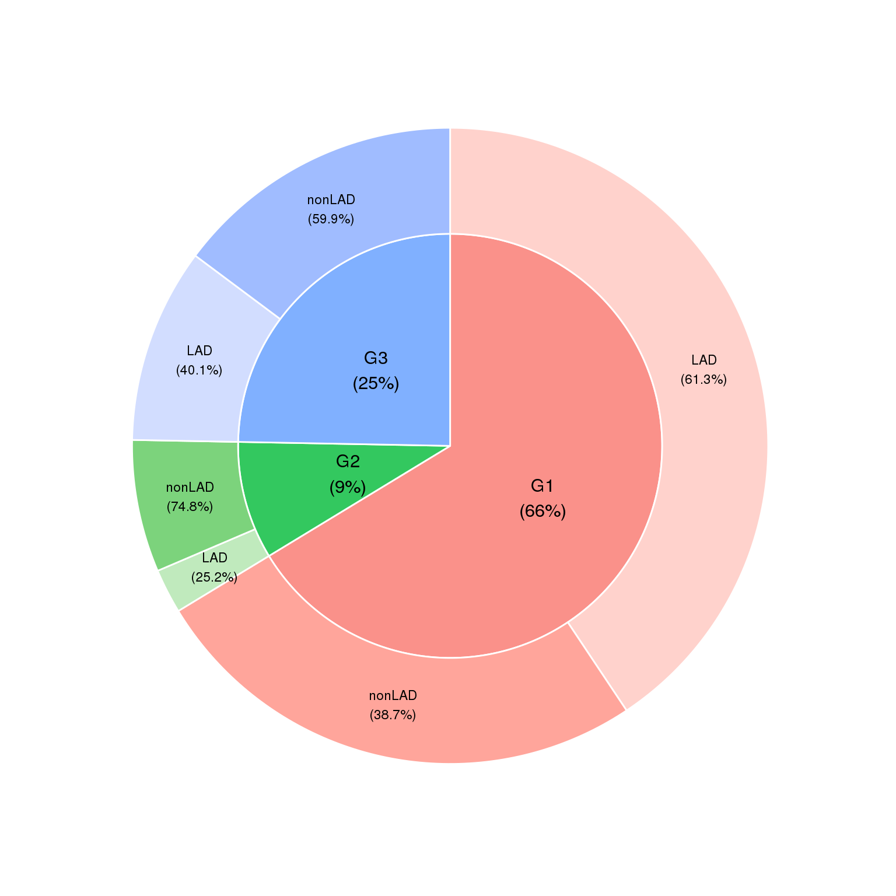
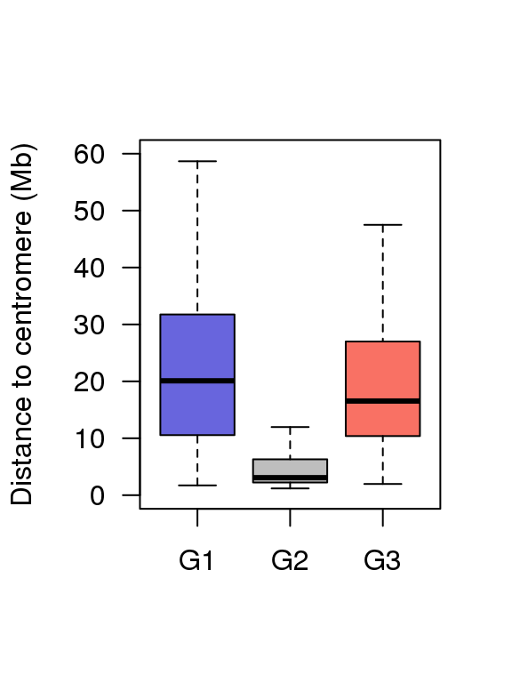
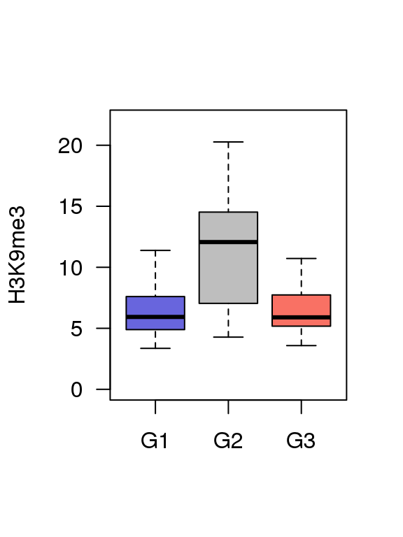
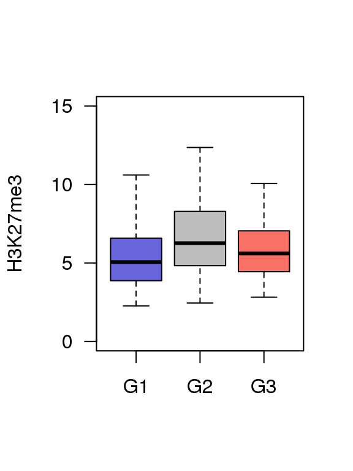
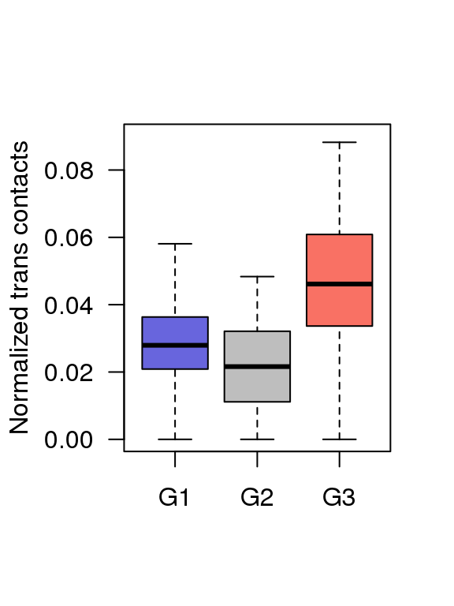
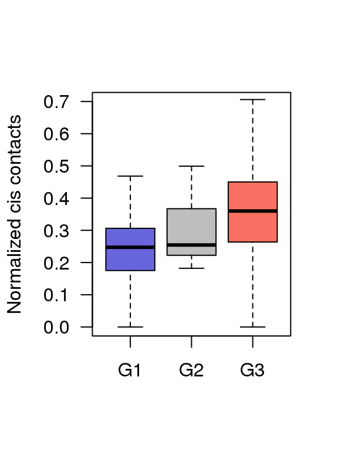
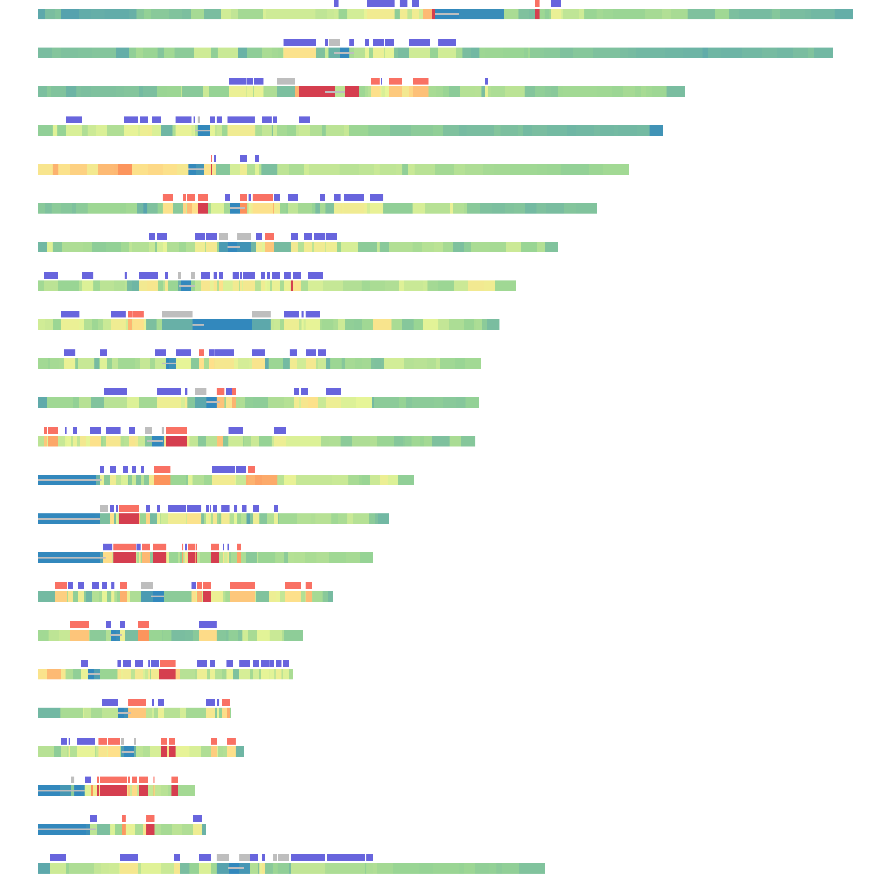

5 Figure4
5.1 Fig.4a
df = read.table('data/hNAD_trans_interactions_4a')
head(df[1:3,1:3])## chr10.18973000.21147000 chr10.35852000.39154000
## chr10-18973000-21147000 0 0
## chr10-35852000-39154000 0 0
## chr10-42355000-46819000 0 0
## chr10.42355000.46819000
## chr10-18973000-21147000 0
## chr10-35852000-39154000 0
## chr10-42355000-46819000 0library(RColorBrewer)
suppressMessages(library(pheatmap))
pheatmap(df,
color = rev(colorRampPalette(c(brewer.pal(9,"Spectral")))(2000)),
show_rownames = F,show_colnames = F)
5.2 Fig.4b
df = read.table('data/4b_data',header = T)
suppressMessages(require(moonBook))
suppressMessages(require(webr))
PieDonut(df,aes(group1,group2),r1=0.8,r0= 0,explodeDonut=T,labelposition=0,
showPieName=FALSE)## Warning: `guides(<scale> = FALSE)` is deprecated. Please use `guides(<scale> =
## "none")` instead.## Warning: Ignoring unknown aesthetics: explode## Warning: `guides(<scale> = FALSE)` is deprecated. Please use `guides(<scale> =
## "none")` instead.
5.3 Fig.4c
df = read.table('data/4c_data',header = T)
head(df)## Group value
## 1 G1 2.9250
## 2 G1 1.7215
## 3 G1 5.7270
## 4 G1 14.5685
## 5 G1 18.6400
## 6 G1 16.1045boxplot(df$value ~ df$Group ,ylim = c(0,60),
col = c('#6865DD','#BEBEBE','#F97164'),
ylab = 'Distance to centromere (Mb)',
las = 1,xlab = '',outline=F)
5.4 Fig.4d
df = read.table('data/4d_data',header = T)
head(df)## Group value
## 1 G1 8.697073
## 2 G1 8.633822
## 3 G1 4.934279
## 4 G1 9.140025
## 5 G1 5.223028
## 6 G1 3.728421boxplot(df$value ~ df$Group ,ylim = c(0,22),
col = c('#6865DD','#BEBEBE','#F97164'),
ylab = 'H3K9me3',
las = 1,xlab = '',outline=F)
5.5 Fig.4e
df = read.table('data/4e_data',header = T)
head(df)## Group value
## 1 G1 5.920465
## 2 G1 4.656847
## 3 G1 6.975359
## 4 G1 5.018031
## 5 G1 6.318276
## 6 G1 9.085513boxplot(df$value ~ df$Group ,ylim = c(0,15),
col = c('#6865DD','#BEBEBE','#F97164'),
ylab = 'H3K27me3',
las = 1,xlab = '',outline=F)
5.6 Fig.4f
df = read.table('data/4f_data',header = T)
head(df)## Group value
## 1 G1 0.03799295
## 2 G1 0.05990357
## 3 G1 0.04539450
## 4 G1 0.04228186
## 5 G1 0.03530280
## 6 G1 0.03524229boxplot(df$value ~ df$Group ,ylim = c(0,0.09),
col = c('#6865DD','#BEBEBE','#F97164'),
ylab = 'Normalized trans contacts',
las = 1,xlab = '',outline=F)
5.7 Fig.4g
df = read.table('data/4g_data',header = T)
head(df)## Group value
## 1 G1 0.1787004
## 2 G1 0.1751463
## 3 G1 0.3006376
## 4 G1 0.3181829
## 5 G1 0.3127916
## 6 G1 0.3465771boxplot(df$value ~ df$Group ,ylim = c(0,0.7),
col = c('#6865DD','#BEBEBE','#F97164'),
ylab = 'Normalized cis contacts',
las = 1,xlab = '',outline=F)
5.8 Fig.4i
A = read.table('data/4i_data',header = T)
head(A)## chr start stop distance
## 1 chr1 1 2300000 0.1687522
## 2 chr1 100756000 109095000 0.9853878
## 3 chr1 109095000 110665000 0.3605765
## 4 chr1 110665000 113045000 0.9917725
## 5 chr1 113045000 114500000 0.6120048
## 6 chr1 114500000 114967000 0.9820714centromere = read.table('data/acen.bed')
centromere.wgs <- split(centromere, f = centromere$V1)
band.wgs <- split(A, f = A$chr)
G1 = read.table('data/G1')
G2 = read.table('data/G2')
G3 = read.table('data/G3')
g1.wgs <- split(G1, f = G1$V1)
g2.wgs <- split(G2, f = G2$V1)
g3.wgs <- split(G3, f = G3$V1)
library(RColorBrewer)
color = rev(colorRampPalette(c(brewer.pal(6,"Spectral")))(201))
color_table = data.frame(color,breaksList = seq(0, 2, by = 0.01))
rc.set.cytoband=function(cyto.info){
band.color = c()
for(i in 1:length(cyto.info$distance)){
color_table$t = abs(color_table$breaksList - cyto.info$distance[i])
t = as.character(color_table[which.min(color_table$t),1])
band.color = c(band.color,t)
}
cyto.info[["BandColor"]] = band.color
cyto.info
}
BandPlot <- function(band,G1,G2,G3,Cen){
col <- rc.set.cytoband(band)
col.band <- col$BandColor
yb <- rep(0, nrow(band))
yt <- rep(0.6, nrow(band))
x = seq(0, 250e06, 1e06)
par(mar = c(0,1,0,1))
plot(x = x, y = rep(0, length(x)), type = "n", xlab = " ", ylab = " ", bty="n", axes = F)
rect(xleft = band$start, xright = band$stop, ybottom = yb, ytop = yt, col = col.band,border = NA)
rect(xleft = Cen[,2], xright = Cen[,3], ybottom = 0.25, ytop = 0.35, col = 'gray',border = NA)
rect(xleft = G1[,2], xright = G1[,3], ybottom = rep(0.7, nrow(G1)), ytop = rep(1.3, nrow(G1)),
col = "#6865DD", border = NA)
if(is.null(G2)==F){
rect(xleft = G2[,2], xright = G2[,3], ybottom = rep(0.7, nrow(G2)), ytop = rep(1.3, nrow(G2)),
col = "#BEBEBE", border = NA)}
if(is.null(G3)==F){
rect(xleft = G3[,2], xright = G3[,3], ybottom = rep(0.7, nrow(G3)), ytop = rep(1.3, nrow(G3)),
col = "#F97164", border = NA)}
}
layout(matrix(seq(1,23), nrow = 23, ncol = 1, byrow = T))
for(i in 1:23){
if(i == 23){
chr = "chrX"
}else{
chr = paste0("chr", i)
}
BandPlot(band.wgs[[chr]],g1.wgs[[chr]],g2.wgs[[chr]],g3.wgs[[chr]],centromere.wgs[[chr]])
}